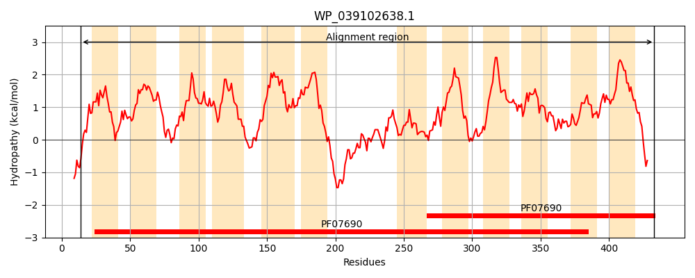
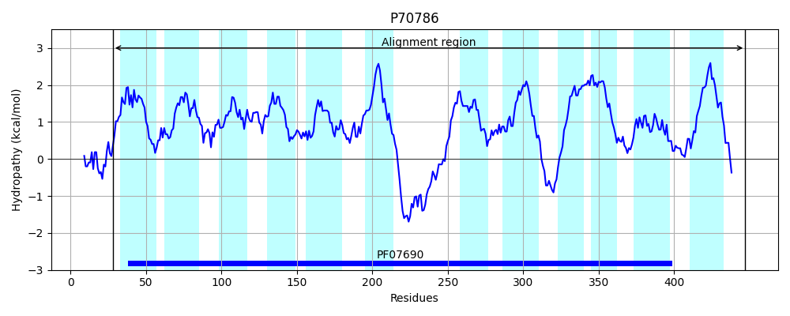
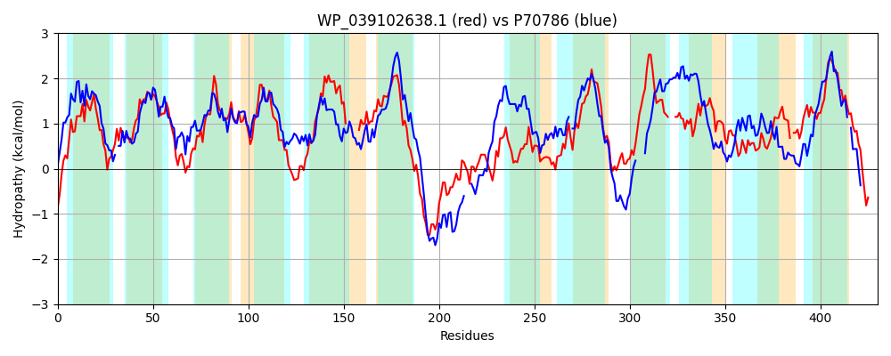

Hit Accession: P70786
Hit TCID: 2.A.1.14.3
Hit Description: gnl|BL_ORD_ID|11301 gnl|TC-DB|P70786|2.A.1.14.3 Putative tartrate transporter - Agrobacterium vitis.
Mach Len: 430
e:0.000000
Query TMS Count : 12
Hit TMS Count: 12
TMS-Overlap Score: 10.600000
Predicted Substrates:CHEBI:35396;tartrate
BLAST Alignment:
Score: 546 , Bit scores: 214 bits, E-value: 6.1e-65, Alignment length: 430, Percentage identity: 30
Query: 14 RQRWLRIIPPILIACIISYMDRVNIAFAMPGGMDAELGISATMAGLAGGIFFIGYLFLQVPGGKIAVHGSGKKFIGWSLVAWAVISVLTGLITNQYQLLVLRFLLGVAEGGMLPVVLTMISNWFPDAERGRANAIVIMFVPIAGIITAPLSG------WIITVLDWRWLFIIEGLLSVAVLLLWAYTVYDRPQEARWISDAEKHYLVETLAAEQKAIAGTEVKNASLSAVLSDKTMWQLIALNFFYQTGIYGYTLWLPTILKELTHSSMGQVGVLAILPYVGAIAGMFLFSSLSDRTGKRKLFVCLPLIGFALCMFLSVAL---KNQIWLSYAALVGCGFFLQSAAGVFWTIPARLFSAEMAGGARGVINALGNLGGFCGPYAVG-VLITLYSKDAGVYCLAISLALAALMAVLLPAKCDAGATPVNTVN 433
R+ RI+P I++ I+++DRVNI FA M+ +LG S+T+ G+ GIFF+GY +VP I + +I ++ W ++S L + +LRFLLGVAE G P ++ +S WFP R A+ + P++ ++ +P+SG ++ + W+W+F+IE ++ + ++ + + DRP++A+W+++ E+++LV+T+ AEQ AG + S+ A L+D + L + F G+Y +W P I+K+ S++ +VG + +P + A+ M L++ SDRTG+R V +G L +A +++ AL + + W++P S A IN++GNLGGF GP +G + T S G+Y +A L ++A++ ++L A+ A T N
Sbjct: 28 RKITFRIVPFIMLLYFIAFLDRVNIGFAALT-MNQDLGFSSTVFGIGAGIFFVGYFLFEVPSNLILNKVGARIWIARVMITWGIVSGLMAFVQGTTSFYILRFLLGVAEAGFFPGIILYLSFWFPARRRAAVTALFMAAAPLSTVLGSPISGALMEMHGLMGLAGWQWMFLIEAAPALILGVVVLFFLTDRPEKAKWLTEEERNWLVKTMNAEQ---AGRGTASHSVMAGLADIRVIALALVYFGTSAGLYTLGIWAPQIIKQFGLSAI-EVGFINAVPGIFAVVAMVLWARHSDRTGERTWHV----VGACLLAAAGLAFAAGATSVFMVLIALTIVNVGISCSKPPLWSMPTMFLSGPAAAAGIATINSIGNLGGFVGPSMIGWIKDTTGSFTGGLYFVAGLLLISAILTLIL-ARSSPKAVETRTAN 447 | Protein Hydropathy Plots: |
|---|
|  |  |
Pairwise Alignment-Hydropathy Plot:
|
|---|
|  |